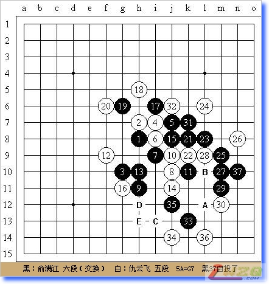
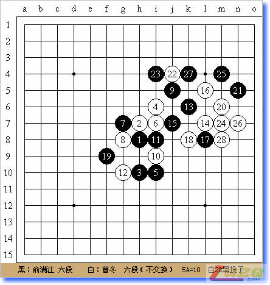

京沪擂台赛7月21-22日战况
#1 京沪擂台赛7月21-22日战况 作者：有志青年 发表时间：2007-7-24 16:55:53
（上海消息 通讯员：百川）7月21日，京沪擂台赛硝烟再起。上海队次锋俞满江六段在上海康虹花园设擂迎接北京队中坚仇云飞五段的挑战。京沪擂台赛组委会委员会、上海五子棋委员会负责人黄民城二段担任裁判长，上海五子棋委员会易伊神4级担任助理裁判。京沪擂台赛上海队三将戈翀宇六段、北京队三锋李一担任记谱员。上海五子棋委员会主要负责人顾炜七段，京沪擂台赛组委会委员、中华连珠网理事长罗锦伟六段，上海五子棋委员会负责人、京沪擂台赛上海队主帅葛凌峰七段，京沪擂台赛北京队领队姚志勇四段、三将曹冬六段，上海五子棋委员会余皓三段、侯新元二段、陈星池4级等莅临观战。
赛前，分析人士认为，仇云飞极有可能选择自己布局，这样做有利于掌握赛事主动权。同时，分析人士还认为，仇云飞选择黑优局的概率极大，这样做可以逼迫对手进行交换，而后执白使用后手策略考验先手方。实战进程同赛前分析基本一致。仇云飞布局“山月”，俞满江经过考虑决定交换。仇云飞的白4变通为“名月”，并保留了俞满江给出的黑5次强点。此后双方进展到黑11都是定式。仇云飞在白12开始变化，通常走白14是认为最强的防。观战棋手一致认为这是仇云飞精心设计的一个变化，以此来考验黑棋的进攻能力。俞满江的黑13、15、17、19都是最强手段。仇云飞的白20使得黑白双方形成了一种对攻的局面。此时的黑21是局面的焦点。观战室的棋手们认为，目前局面是黑绝对有利的情况。俞满江经过长考后，黑21、23继续是强硬的攻击。此时，观战棋手中普遍认为俞满江可以取胜。仇云飞的白24是观战室棋手们拆解后认为最强的防御。经过近30分钟长考的黑25手，是看清所有变化的妙招。也是戈翀宇推荐的最佳攻击线路。此后双方进程基本如观战室的预料，俞满江黑37后仇云飞投子，此后黑有A—E的VCF胜法。

（上海消息 通讯员：百川）7月22日上午九时，京沪五子棋擂台赛第6局在上海康虹花园开战。上海队次锋俞满江六段继续设擂迎战北京队三将曹冬六段的挑战。
比赛开始，曹冬决定由俞满江布局。俞满江布局“瑞星”，曹冬经考虑决定不交换。双方定式阶段进行到黑11后，曹冬的白12采用最古老的下法，俞满江黑13应以最强着法。曹冬的白14应对很快，是最近在国内大赛中频繁采用的变化，估计是事先研究的战术。黑15到黑17是没有争议的变化.白18是国内近期高段选手在A级赛事中频繁采用的变化，黑19是企图加固黑棋左方势力，考虑全局作战的思路。但是曹冬的白20手早早变招，这在实战中是极为少见的。俞满江经过长考采取了谨慎的防守。曹冬的秘密武器在于白24手。实战黑25过于考虑棋型的拓展，结果给白棋创造了绝好的追击机会。白28后，俞满江投子。曹冬不仅使北京队摆脱了一路滑跌的境地，回到了擂主的宝座，而且也报了5月份在上海名人赛中的一箭之仇。

比赛期间，上海五子棋委员会负责人、京沪擂台赛上海队主帅葛凌峰七段、三将戈翀宇六段，京沪擂台赛北京队领队姚志勇四段、三锋李一、中坚仇云飞五段莅临观战。
下一场对局将于8月举办，上海队三锋黄宇峰三段将北上京城挑战。
#2 Re:京沪擂台赛7月21-22日战况 作者：蒲扇 发表时间：2007-7-26 14:06:06
京沪向来是冤家，谁更牛呢，拭目以待
不过这么大个事，搜狐棋牌新闻上咋没有呢？